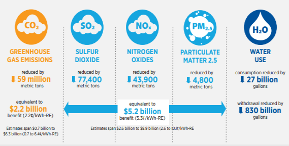
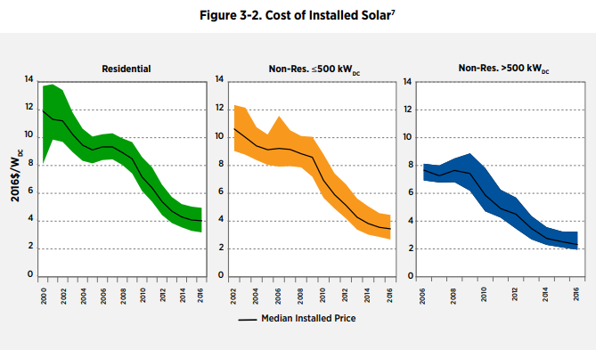

Impacts of Green Energy
Healthy Earth
Choosing green energy has a great deal of impact on the environment. Conventional energy that uses fossil fuels pollutes the air more than most other industries. The emission of gasses like sulfur dioxide, nitrogen oxides, or carbon monoxide leads to a serious number of environmental problems. Unlike conventional energy, green power generates much less emissions (shown in the figure to the right). Green Energy can clean up the Earth’s air. With cleaner air, it will lead to better health conditions and stabilization of temperatures. Additionally, green energy uses renewable resources, unlike conventional energy. Using non-renewable resources means the sources can run out, which means no more energy for anyone who uses that source! It is safe to say that green energy is the better choice for the long run.
Reduced Cost
Green energy doesn't just benefit the environment, it benefits your wallet too. On average, Fossil Fuels actually cost MORE over time than green energy. This is because green energy would only be a one time investment, as compared to constantly paying for a service. You don't have to spend a lot of money on a big new installation, you can start small and improve certain parts of your house. For instance, you can install a solar water heater as a start. If you don't want to or don't have the budget for solar, you can also use wind energy, which is considerably cheaper. But it is important to take your living location into consideration, too. The best choice for someone in Arizona might not be the best for someone in Illinois. And, more people using green energy will accelerate the technology faster as there is more demand, which, in turn, will drastically decrease the price over time (shown in figure to the left). So this is a great time to start investing in green energy tech, and contribute to the future of energies.